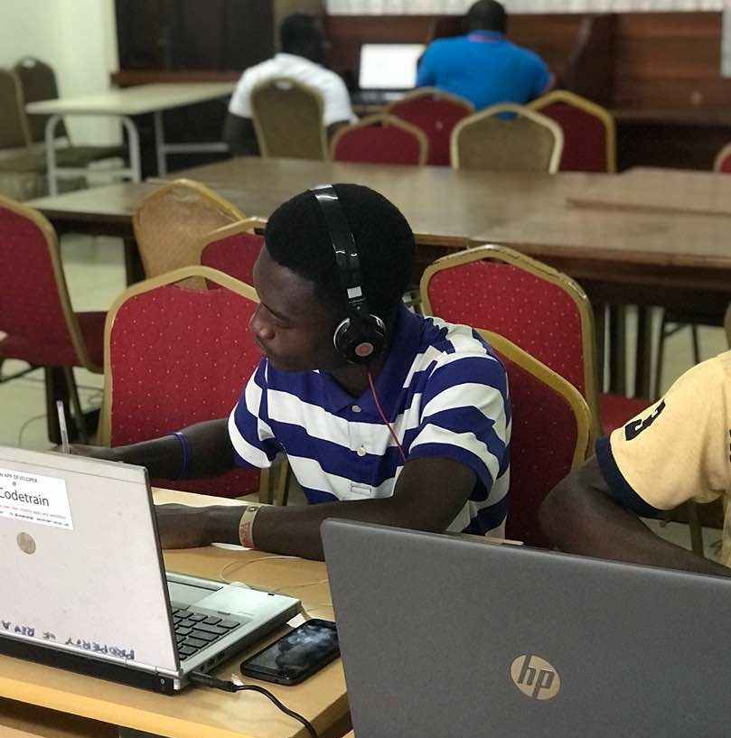

<ion-app>
  <ion-split-pane contentId="main-content">
    <ion-menu contentId="main-content" type="overlay" mode="ios">
      <ion-content>
        <ion-list id="inbox-list">
          <div  [routerLink]="['profile']" routerLinkActive="router-link-active" fill="clear" style="background: url(../assets/steve.jpg)no-repeat left; height: 250px; padding: 16px;">
            <ion-avatar>
              
            </ion-avatar>
              <ion-list-header><h4 style="color: #fff;">User</h4></ion-list-header>
              <ion-note style="color: #fff;">user@gmail.com</ion-note>
              <br>
              <ion-icon name="pencil" style="font-size:32px; color:#fff"></ion-icon>
          </div>
        

          <ion-menu-toggle auto-hide="false" *ngFor="let p of appPages; let i = index">
            <ion-item (click)="selectedIndex = i" routerDirection="root" [routerLink]="[p.url]" lines="none" detail="false" [class.selected]="selectedIndex == i">
              <ion-icon slot="start" [ios]="p.icon + '-outline'" [md]="p.icon + '-sharp'"></ion-icon>
              <ion-label>{{ p.title }}</ion-label>
            </ion-item>
          </ion-menu-toggle>
        </ion-list>
        <ion-item lines="none">
          <div slot="end">
            <ion-icon name="moon"></ion-icon>
            <ion-toggle id="themeToggle"></ion-toggle>
          </div>
        </ion-item>
      </ion-content>
    </ion-menu>
    <ion-router-outlet id="main-content"></ion-router-outlet>
  </ion-split-pane>
</ion-app>
